La acústica es la ciencia del sonido. Es el estudio de la propagación y de la transmisión de las
ondas mecánicas de los sonidos, de los infrasonidos y de los ultrasonidos, según las frecuencias
consideradas. Si se refiere a la definición que ya daba la Academia Francesa en 1770, la acústica es
“la parte de la física que estudia los sonidos”.
Esta disciplina secular responde, pues, a las leyes de la física e incluye distintas ramas como la
acústica arquitectónica, la acústica musical, la electroacústica, la termo-acústica, etc.
El estudio de la acústica se remonta a la antigüedad y se atribuye su origen a Pitágoras en el siglo
VI a. de C.
Más tarde, en el siglo IV a. de C., Aristóteles prestara también atención y establecerá que “el
sonido se genera por la puesta en movimiento del aire” y así “el sonido viaja tan lejos como sea
posible”.
En el siglo III a. de C. Algunos sabios asumen que el sonido se propaga según un fenómeno
ondulatorio parecido a las ondas visibles en la superficie del agua.
A principios del siglo XVII, Galileo realizó una serie de experimentos que lo llevan a teorizar la
noción de frecuencia, tras estudiar el “movimiento del aire generado por un cuerpo en vibración”.
La transmisión del sonido no es instantánea, existe un retraso de la percepción del fenómeno en
función de la distancia.
A mayor distancia mayor retardo, (se visualiza primero el relámpago y luego se percibe el trueno),
esto determina que la velocidad de propagación es finita.
La distancia entre dos compresiones o depresiones máximas consecutivas del medio a través del cual se propaga la onda es lo que llamamos longitud de onda y se representa frecuentemente con el símbolo λ.
Se llama período (T) al tiempo que tarda la partícula en volver a su posición y dirección de velocidad inicial, siendo el proceso que se desarrolla en un período lo que denominamos ciclo.
La forma de propagación de una onda sonora constituye un fenómeno periódico cuya frecuencia (f) se define a partir del número de veces que dicho fenómeno se repite en una unidad de tiempo, es decir el número de ciclos por unidad de tiempo.
Los sonidos más comunes están constituidos por perturbaciones repetitivas a intervalos regulares de
tiempo, a las que llamamos ondas.
La onda es una perturbación repetida en el tiempo, es decir es un fenómeno repetitivo, que
transporta energía de un punto del espacio a otro, sin desplazamiento neto de materia.
(Midebien, 2022, enero 19). Menciona que La intensidad del sonido se define como la potencia acústica transferida por una onda sonora por unidad de área normal a la dirección de propagación.” Se expresa mediante la fórmula I= P/A, donde I es la intensidad de sonido, P es la potencia acústica y A es el área normal a la dirección de propagación. La intensidad del sonido se mide a través de vatios por metro cuadrado (W/m²) en el Sistema Internacional de Unidades (SI). Es por eso que la intensidad del sonido es importante en diversas aplicaciones, como la acústica arquitectónica, a la horade realizar un ultrasonido y en la ingeniería de audio.
(Midebien, 2022, enero 19). La fórmula para poder calcular la intensidad en decibeles es de dB= 10Log10 P1/p2. A continuación, se presentan ejemplos resueltos acerca de la intensidad del sonido
Ejemplo 1: Se tiene una potencia acústica de 50 W y un área de 4 m². Calcular la intensidad del sonido.
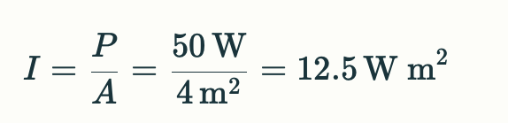
Ejemplo 2: Si la potencia acústica es de 20 W y la intensidad del sonido es de 5 W/m², calcular el área.
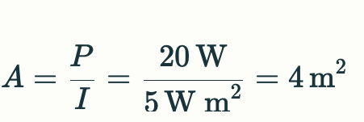
Ejemplo 3: Calcular la intensidad del sonido en decibeles si se tiene una potencia de 8 W y otra de 2 W.
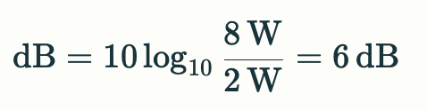
El movimiento ondulatorio es un fenómeno natural que se caracteriza por la propagación de energía sin el transporte de materia. La energía se propaga a través de ondas que se desplazan en diferentes medios, como el agua, el aire o una cuerda. Las ondas pueden ser transversales, longitudinales o electromagnéticas, dependiendo de la dirección de la vibración de las partículas del medio respecto a la dirección de propagación de la onda.
Las ondas pueden clasificarse en longitudinales y transversales, dependiendo de la dirección del desplazamiento del medio y la dirección de propagación de la energía en forma de ondas. Las ondas longitudinales se propagan en la dirección de desplazamiento del medio, como las ondas sonoras en sólidos, líquidos y gases. Las ondas transversales se propagan transversalmente a la dirección del desplazamiento del medio, como las ondas formadas en un estanque al arrojar un objeto, las ondas en una cuerda fija en sus extremos cuando se le aplica una fuerza hacia arriba, y las ondas electromagnéticas debidas a la interacción entre dos campos variables, uno magnético y otro eléctrico.
El principio de Huygens es una herramienta útil para explicar el movimiento ondulatorio. El principio de Huygens establece que cada punto de un frente de onda actúa como una fuente de ondas secundarias. Las ondas secundarias se propagan en todas las direcciones y su interferencia da lugar a la formación de un nuevo frente de onda
Zapata, F. (2021, 5 agosto). El movimiento armónico simple (MAS) constituye una forma de oscilación en la que un objeto se desplaza a lo largo de una trayectoria sinusoidal, adoptando la forma de una onda senoidal. Su rasgo distintivo radica en su regularidad periódica y la carencia de fuerzas de fricción. Este fenómeno es esencial en la física y encuentra diversas aplicaciones prácticas, como en la investigación de sistemas que involucran masa y resortes, péndulos, así como cuerdas en instrumentos musicales, entre otros ejemplos.
La fórmula que describe el movimiento armónico simple es:
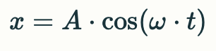
donde:
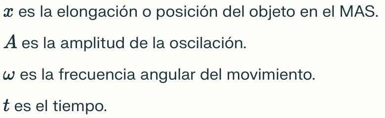
ejemplo
Una partícula que se mueve de acuerdo a un movimiento armónico simple tarda 1 s en llegar de un
extramo a otro de su trayectoria a otro. Sabiendo que la distancia que separa ambas posiciones es de
16 cm, y que el movimiento se inicia en un extremo de la trayectoria, determina:
1. El periodo del movimiento
2. La posición de la partícula a los 1.5 segundos
3. La amplitud máxima de las oscilaciones
La partícula tarda 1 segundo en ir de un extremo a otro de la trayectoria, es decir, en hacer media oscilación. La oscilación completa se cumple cuando la partícula vuelve al punto de inicio:
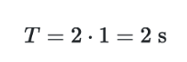
Dado que la partícula tarda 2 segundos en completar una oscilación, a los 1.5 segundos se habrán completado los 3/4 de la misma y se encontrará en el punto de equilibrio, de vuelta hacia el punto inicial.
La distancia entre los extremos de un m.a.s. es el doble de la amplitud. Por tanto:
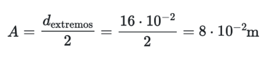
(Fernández, J. L. s. f.). El movimiento periódico se define como aquel que se reproduce en intervalos regulares de tiempo, como es evidente en fenómenos como el vaivén de una silla mecedora o el desplazamiento de un péndulo. Este tipo de movimiento se distingue por su regularidad temporal y puede manifestarse en diversas formas, incluyendo movimientos circulares o el movimiento armónico simple.
La fórmula que describe el movimiento armónico simple, un tipo de movimiento periódico, es:
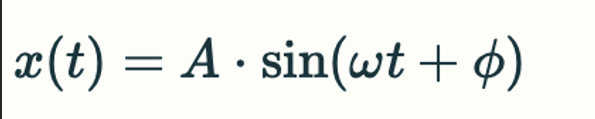
donde:
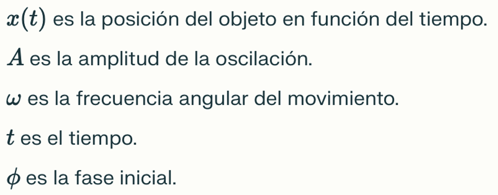
(Fernández, J. L, s. f.). Algunas de las aplicaciones del movimiento periódico en la vida real
incluyen el funcionamiento de péndulos en relojes, el movimiento de las sillas mecedoras y el vaivén
de un péndulo. Este tipo de movimiento es fundamental en el estudio de fenómenos oscilatorios en la
naturaleza y la ingeniería.
ejemplo:
Un resorte se estira 4 cm desde su posición de equilibrio y se suelta. El resorte realiza un
movimiento armónico simple con una frecuencia de 2 Hz.
1. Encuentra la ecuación que describe el movimiento periódico del resorte en función
del tiempo.
2. Determina la posición del resorte en el instante t = 0.5 s.
3. Calcula la velocidad del resorte en ese mismo instante.
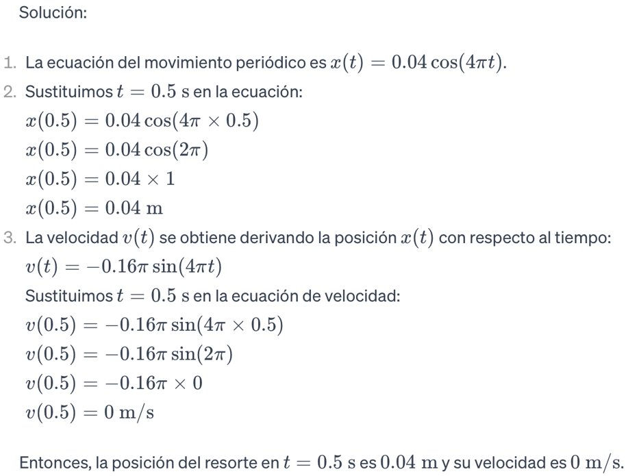
Los cuerpos elásticos en física son aquellos que, al ser sometidos a una fuerza externa, experimentan una deformación que se puede medir y que es reversible, es decir, que desaparece cuando se elimina la fuerza que la produjo. La elasticidad es una propiedad de la materia que permite a los cuerpos recuperar su forma original una vez que la fuerza externa se ha eliminado.
La elasticidad se define como la capacidad de un cuerpo de experimentar una deformación reversible cuando se somete a una fuerza externa (Halliday, Resnick y Walker, 2014, p. 343). La elasticidad se mide por el módulo de elasticidad, que es la pendiente de la curva de esfuerzo-deformación. El módulo de elasticidad es un tensor de cuarto rango que caracteriza las propiedades elásticas de un material.
La energía potencial elástica asociada a la fuerza elástica se representa mediante la fórmula Ep(x) = ½ . k.x 2 , donde k es la constante de resorte. La Ley de Hooke, formulada por el físico Robert Hooke, establece que la fuerza necesaria para deformar un material elástico es proporcional al grado de deformación.
La elasticidad es una propiedad que se puede observar en materiales como los resortes, los muelles, y los cables. Estos materiales experimentan una deformación cuando se les aplica una fuerza externa y vuelven a su forma original cuando se elimina la fuerza. La elasticidad es una propiedad importante en la ingeniería y la física, ya que permite diseñar estructuras y sistemas que puedan soportar cargas y fuerzas sin deformarse permanentemente.
(Leskow, E. C, 2021, 15 julio). La Ley de Hooke constituye un principio físico que explica el comportamiento elástico de los sólidos, especialmente en el contexto de los resortes. Esta ley postula que la fuerza aplicada a un resorte es directamente proporcional a la deformación que experimenta, siempre y cuando no se supere el límite elástico del material. En otras palabras, mientras la deformación sea lineal y no se exceda cierto umbral, la fuerza aplicada y la elongación del resorte mantendrán una relación proporcional.
La fórmula de la Ley de Hooke para resortes es:
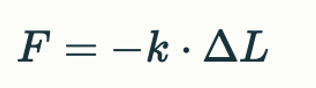
donde:
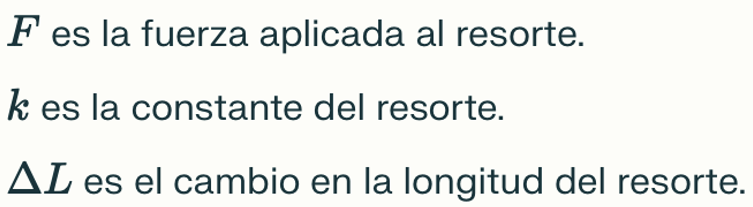
(Leskow, E. C., 2021, 15 julio). La Ley de Hooke encuentra aplicación en diversas situaciones del
mundo real, desempeñando un papel fundamental en numerosos campos. En la fabricación de
dinamómetros, que se emplean para medir fuerzas, esta ley es esencial para garantizar mediciones
precisas y proporcionales. Además, en la construcción de básculas y balanzas, la Ley de Hooke se
utiliza para asegurar una relación lineal entre la carga aplicada y la deflexión del sistema.
ejemplo:
Supongamos que un resorte tiene una constante elástica k = 50 N/m. 1. Si se aplica una fuerza de 10 N sobre el resorte, ¿cuánto se estirará? 2. Si se duplica la fuerza aplicada, ¿cuánto se estirará el resorte? 3. ¿Cuál sería la fuerza necesaria para estirar el resorte 0.1 m?
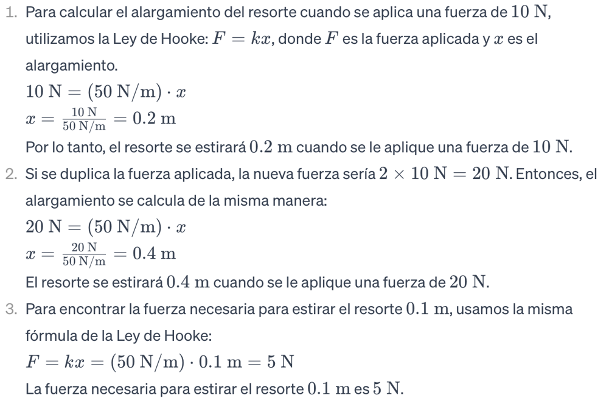
El esfuerzo es un concepto fundamental en física y mecánica de materiales, y se refiere a la fuerza aplicada sobre una unidad de área. El esfuerzo se mide en unidades de presión, como pascales (Pa) o libras por pulgada cuadrada (psi), y puede ser de diferentes tipos, como tensión, flexión, compresión y cortantes (Esfuerzo y deformación. 3dcadportal.com.). La deformación unitaria se define como el cambio de dimensión por unidad de longitud y se expresa en pulgadas por pulgada o centímetros por centímetro.
El esfuerzo se calcula como la fuerza total referida al área del plano de aplicación, y se expresa como s=F/A, donde F es la fuerza total y A es el área del plano de aplicación. El esfuerzo se define como la reacción interna de un cuerpo a la aplicación de una fuerza o conjunto de fuerzas, y no se puede medir directamente, ya que el parámetro que se mide es la fuerza1. Si el esfuerzo actúa uniformemente en una superficie, el esfuerzo o tensión indica la intensidad de las fuerzas que actúan sobre el plano, y carece de sentido hablar de esfuerzo actuando sobre un punto.
La deformación en física es un fenómeno complejo que abarca desde cambios temporales en la forma de un material hasta deformaciones permanentes, y su comprensión es fundamental para el diseño y la ingeniería de estructuras y materiales. Se refiere al cambio en la forma o tamaño de un objeto debido a fuerzas externas. Este fenómeno es esencial en la mecánica de sólidos y la ciencia de materiales, ya que permite comprender cómo los materiales responden a las cargas aplicadas.
Según Halliday, Resnick y Walker (2014, p. 343), la deformación es el resultado de la aplicación de fuerzas externas sobre un objeto, lo que puede provocar cambios en su forma original. Este proceso puede manifestarse de diversas maneras, como la elongación, compresión, torsión o flexión de un material.
la deformación es un cambio físico que afecta a la forma de la materia3. Algunas deformaciones son reversibles, es decir, la materia vuelve a su estado inicial cuando la fuerza deja de actuar. En otras ocasiones, las deformaciones son permanentes, como las fracturas. Las deformaciones permanentes son cambios físicos irreversibles, ya que permanecen a pesar de que desaparezca la fuerza que las provocó. Dependiendo de las propiedades específicas de la materia y de la intensidad de las fuerzas que apliquemos, la materia puede comportarse de tres maneras: elástica, plástica o rígida.
En palabras de Serway y Jewett (2014, p. 405), la deformación elástica es aquella en la que un
material
puede recuperar su forma original una vez que cesa la fuerza aplicada. Este tipo de deformación se
caracteriza por seguir la ley de Hooke, que establece una relación lineal entre el esfuerzo aplicado
y la
deformación resultante dentro del límite elástico del material.
Por otro lado, la deformación plástica, como señala Sanden van der Meijer (s.f), es aquella en la
que un
material experimenta una deformación permanente, sin poder recuperar su forma original una vez que
se retira
la fuerza aplicada. Este tipo de deformación suele ocurrir más allá del límite elástico del
material.
intensidad es una ley que describe cómo la intensidad de una fuerza o una radiación decae con la
distancia desde su fuente. Esta ley se aplica en diversos campos de la física, como la gravitación,
la electromagnetismo y la radiación.
Es una ley fundamental que describe cómo la intensidad de una fuerza o una radiación decae con la
distancia desde su fuente. Esta ley se aplica en diversos campos de la física, como la gravitación,
la electromagnetismo y la radiación.
Según Halliday, Resnick y Walker (2014, p. 343), la ley inversa del cuadrado se puede expresar matemáticamente como I = k/r^2, donde I es la intensidad de la fuerza o la radiación, k es una constante de proporcionalidad y r es la distancia desde la fuente. Esta fórmula indica que la intensidad disminuye a medida que aumenta la distancia, ya que el cuadrado de la distancia está en el denominador.
Serway y Jewett (2014, p. 405) explican que la ley inversa del cuadrado se puede aplicar a la fuerza gravitatoria entre dos cuerpos. La fuerza gravitatoria entre dos cuerpos es directamente proporcional al producto de sus masas e inversamente proporcional al cuadrado de la distancia entre sus centros de masa. Esto se puede expresar matemáticamente como F = G(m1m2)/r^2, donde F es la fuerza gravitatoria, G es la constante de gravitación universal, m1 y m2 son las masas de los cuerpos y r es la distancia entre sus centros de masa.
(StudySmarter, s. f.). La intensidad de una onda hace referencia a la cantidad de potencia que transporta por unidad de área y se expresa en vatios por metro cuadrado (W/m^2). En el ámbito de las ondas sonoras, la intensidad guarda una conexión directa con la amplitud de movimiento de las partículas en el medio por el cual se propaga el sonido.
La fórmula para la intensidad de una onda es:
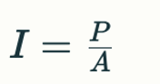
donde
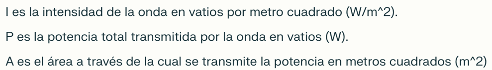
(StudySmarter, s. f.). La utilización de la intensidad de las ondas sonoras abarca múltiples
aplicaciones prácticas en situaciones cotidianas. Este fenómeno juega un papel esencial en la
comunicación verbal diaria, en la creación de imágenes mediante ecografías, en la detección de
imperfecciones en materiales mediante técnicas no destructivas, en la identificación de obstáculos
submarinos y en la medición de la potencia de sistemas de sonido. Además, la intensidad del sonido
desempeña un rol crucial en la evaluación del nivel de presión sonora y su impacto tanto en la salud
humana como en el medio ambiente.
Ejemplo:
Supongamos que tienes una fuente de sonido que emite una potencia de 0.02 W de manera isotrópica (en
todas direcciones por igual). La onda se propaga en el aire y alcanza una superficie esférica
imaginaria con un radio de 4 m alrededor de la fuente.
1. Calcula la intensidad de la onda sonora en la superficie esférica.
2. Si la potencia de la fuente se duplica, ¿cómo afectaría esto a la intensidad en la misma
superficie esférica?
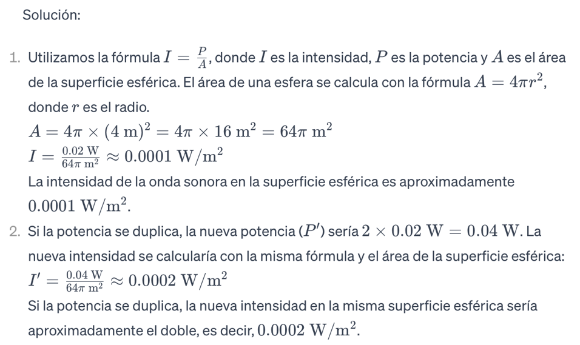
La vibración de las columnas de aire contenidas en los tubos sonoros es debida a la formación de una onda estacionaria. Por tanto, las columnas poseen nodos (vibración nula) y vientres (amplitud de vibración máxima), equidistantes de los anteriores. La distancia entre dos nodos o dos vientres consecutivos es siempre de media longitud de onda. En los extremos cerrados siempre se producen nodos y en los extremos abiertos generalmente se producen vientres.
Las variaciones de temperatura influyen sobre la frecuencia de los sonidos que emite un tubo sonoro: cuando aumenta la temperatura, aumenta la velocidad del sonido y por lo tanto la frecuencia de los sonidos que éste emite. Por otra parte, el aumento de temperatura afecta también a las dimensiones del tubo; al aumentar su longitud el sonido será más grave, compensándose en parte el efecto de la temperatura sobre la velocidad del sonido.
Halliday, D., Resnick, R., & Walker, J. (2014). La energía de movimiento ondulatorio es una forma de energía asociada a las ondas, que se propaga a través de un medio sin transportar materia. Esta energía se manifiesta en diferentes fenómenos naturales, como las ondas sonoras, las ondas electromagnéticas y las ondas sísmicas.
Halliday, D., Resnick, R., & Walker, J. (2014). La energía de movimiento ondulatorio es una forma de energía asociada a las ondas, que se propaga a través de un medio sin transportar materia. Esta energía se manifiesta en diferentes fenómenos naturales, como las ondas sonoras, las ondas electromagnéticas y las ondas sísmicas.
Las ondas electromagnéticas pueden definirse como un flujo de energía que se intercambia entre el
campo eléctrico y el campo magnético y que se propaga por el espacio.
la energía electromagnética se propaga mediante ondas electromagnéticas. La velocidad de propagación
de estas ondas en el vacío es precisamente la velocidad de la luz en el vacío. Una onda
electromagnética armónica plana se comporta y se propaga como una onda transversal; es decir, su
dirección de “vibración” o de oscilación es perpendicular a la dirección de propagación.
Una onda senoidal, o sinusoide es la gráfica de la función matemática seno de la trigonometría.
Consiste en una frecuencia única con una amplitud constante.
Al ser una función que funciona con la entidad trigonométrica seno entonces su media estará dentro
del rango de -1 a 1. En cambio, si se le agrega algún voltaje, entonces la potencia será decidida
por el voltaje, pero por si sola la media de la potencia de una onda senoidal estará aproximadamente
entre 1 y -1.